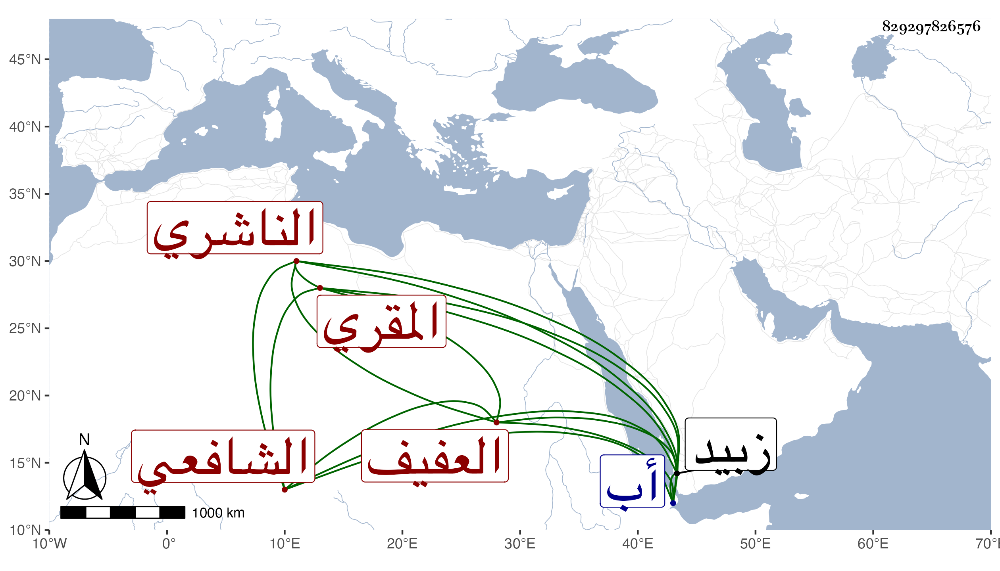

0902Sakhawi.DawLamic.ITO20230111-ara1.EIS1600.829297826576
Biography ID: 829297826576
470
عثمان بن عمر بن أبي بكر بن علي بن محمد بن أبي بكر بن عبد الله بن عمر بن عبد الرحمن بن عبد الله العفيف الناشري المقري الشافعي ابن أخي القاضي موفق الدين علي وابن عم القاضي الطيب بن أحمد بن أبي بكر وتلميذه . له تصنيف في الناشريين سماه البستان الزاهر في طبقات علماء بني ناشر طالعته وهو مفيد واستطرد فيه لغيرهم مع فوائد ومسائل بل وعمل شرحا على الحاوي والإرشاد في مجلدين مات عنه مسودة وأخذ القراءات عن ابن الجزري تلا عليه ختمة للعشر والشهاب أحمد بن محمد الأشعري وعلي بن محمد الشرعبي وصنف فيها الهداية إلى تحقيق الرواية في رواية قالون والدوري والدر الناظم في رواية حفص عن عاصم وغير ذلك ، وحج وجاور وكان فقيها مقرئا مولده سنة خمس وثمانمائة ومات بعد الأربعين . أفادنيه حمزة الناشري وفي أثناء كتابه في الناشريين مما يدخل في ترجمته أشياء ومولده إنما هو في ربيع الثاني سنة أربع ، وكان فقيها عالما محققا لعلوم جمة منها الفقه والقراءات والفرائض وغيرها مع مشاركة في الأدب والشعر . ويقال أنه بلغ في شرح الإرشاد إلى إثناء الصداق ودرس بمدارس في زبيد ثم رتبه الظاهر في تدريس مدرسته وكان مبارك التدريس انتفع به جماعة كثيرون وولي أيضا إمامة الظاهرية فلما اختل الأمر انتقل إلى أب في أواخر جمادى الأولى سنة ثمان وأربعين باستدعاء مالكها أسد الدين أحمد بن الليث السيري الهمذاني صاحب حصن جب فرتبه مدرسا بمدرسة الأسدية التي نشأها هناك وأضاف إليه إمامتها وتدريس القراءات بها وكذا أعطاه تدريس غيرها كالجلالية وتصدر للفتوى والإقراء فلم يلبث أن مات في يوم الأحد تاسع عشري ذي الحجة منها بالطاعون وكان آخر كلامه الإقرار بالشهادتين وتأسف الخلق على فقده وشهد جنازته من لا يحصى ورثاه بعض الشعراء رحمه الله وإيانا .
